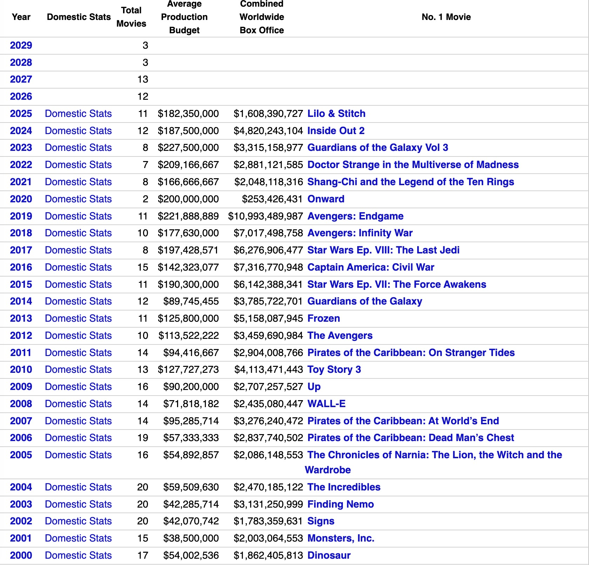

Disney vs. Studio Ghibli
- Main Page 
- low-output, high-craftsmanship model, creates scarcity but also limits mass-market dominance
- hand-drawn animation, nonlinear storytelling, and subtle emotional depth
- has experienced financial instability — nearly closing in 2014 after the retirement of Miyazaki (he has retired and came back 4 times). Its dependence on a few key creators and slower monetization methods has made it more vulnerable to market shift
- hand-drawn animation, nonlinear storytelling, and subtle emotional depth
- has experienced financial instability — nearly closing in 2014 after the retirement of Miyazaki (he has retired and came back 4 times). Its dependence on a few key creators and slower monetization methods has made it more vulnerable to market shift
© 2025 Isabella Li Economics Final Project
- digital animation, often following predictable narrative arcs with mass appeal
- financially robust